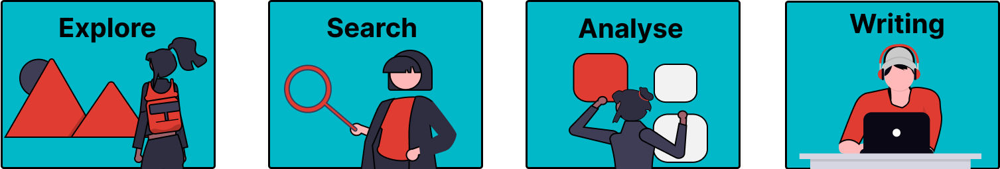

1 Introduction to AI Tools for Literature Review#
Introduction to the Literature Review Process#
During the literature review process, there are multiple steps where you will work with information. There are four phases in the literature review:

Defining your topic and research questions
Searching and selecting sources
Analysing selected sources
Writing your text and citing sources
For each of these steps, AI tools can support the process. To be able to effectively use these tools, it is important to understand three types of GenAI tools:
General tools
Academic search tools
Local-input tools
Knowing a bit more about how these tools are trained and what sources they use will make you more effective in using AI for literature review. So let’s dive into this topic:
Different Tools for Literature Review#
GenAI tools differ in the sources they draw from. General AI tools like Copilot, ChatGPT or Claude search, or are trained on sources from the open web. They are designed to help with general questions. It can also happen that the sources they provide are fake.
Academic AI tools, on the other hand, draw from academic sources, often from Semantic Scholar. They are developed specifically to assist in the process of doing research. For example, they can assist in finding relevant peer-reviewed articles by searching directly (for example through agent-based or semantic searching), or by finding new articles based on initial seed papers (literature mapping). They can also help summarise main topics in a specific research field.
Local-input tools, like NotebookLM, ChatPDF and ASReview allow you to work on specific documents you upload to a server, or host locally. They work well when you have specific sources you want to study, and summarise specific information and extract the details. You can also upload specific documents to a general tool for analysis, but because they draw from their extensive knowledge base, the output the model provides can be less specific. In a tool that is designed to work with the sources you put in, you often have more control over the output.
Depending on which task you need to perform for a literature review, you might need to use a general tool, focus on a more specific academic tool or use a local-input tool. In this guide we will discuss all three types of models throughout. Our goal is that you know for each of the phases how an AI tool could assist you in the process, and that you are able to select a relevant tool to work with.
Some tools combine multiple types of AI in one. For example, Elicit offers both the option to search academic literature, and subsequently allows you to analyse the documents you select, working like a local-input tool.
Deep Reasoning Models#
In all three types of tools you can often switch the type of model that is used from a light model, to a more advanced, often reasoning model. They will offer the option to switch to an option called “reasoning / deep research”. This means the tool will use a model that takes more time and processes a problem step-by-step. This often leads to more detailed information. A downside of deep reasoning models is that it takes more time to perform a task and they also consume a larger amount of energy to run. Moreover, sometimes you can only use deep reasoning models if you use the paid version, or you have a limited number of prompts you can do in a free version. Depending on which task you are performing and how detailed you need the output to be, you can decide to use this feature or not.
How to Choose Your AI Tool#
Some questions you can ask yourself to decide what type of AI tool you should use are:
What phase of your literature review are you at and what exact task would you like the tool to do?
What type of sources do you need the model to use to complete its task? Academic, general, or your own input?
What costs are involved in using the tool and what are you allowed to do in the free version?
Do you need deep reasoning features or will general reasoning suffice for your task?
Do you want to upload sources to the tool? If so: make sure you are not working with sensitive or copyrighted information.
There are many AI tools out there you could use for your research, this initial introduction gave some examples as a starting point and basic understanding of the different tools. For a more comprehensive list of tools, go to resources like this guide from Hong Kong University of Science and Technology.
Checklist for Evaluating an AI tool
To help you evaluate a tool you plan to use for a literature review, it can be helpful to use a checklist (for example this list from Wageningen University).
It is important to be transparent about your use of AI throughout your project. Publishers are increasingly asking for statements about the use of AI, and researchers should check the policies of the chosen publication outlet. Be sure to document your use of AI throughout your project. For students at TU Delft this is dependent on the practice at your faculty / program or the instructions you received from your lecturer/supervisor. If you didn’t receive specific instructions, you can use this guide from Wageningen University as a format to help document your use of AI.
Summary#
General tools |
Academic search tools |
Local-input tools |
|---|---|---|
Trained on / search open web |
Trained on / search academic sources (often from Semantic Scholar) |
Trained on / search data provided by you |
General questions |
Research questions |
Specific questions related to specific sources |
Sources provided sometimes fake |
Sources provided are real |
Sources used are real |
Examples: |
Examples: |
Examples: |
References#
AI: Library tools and resources. (2025, March 6). Wageningen University & Research. https://www.wur.nl/en/library/researchers/ai-library-tools-and-resources.htm
Zhao, A. (n.d.). LibGuides: Emerging AI Tools for Literature Review: Overview. Retrieved June 17, 2025, from https://libguides.hkust.edu.hk/AI-tools-literature-review/overview